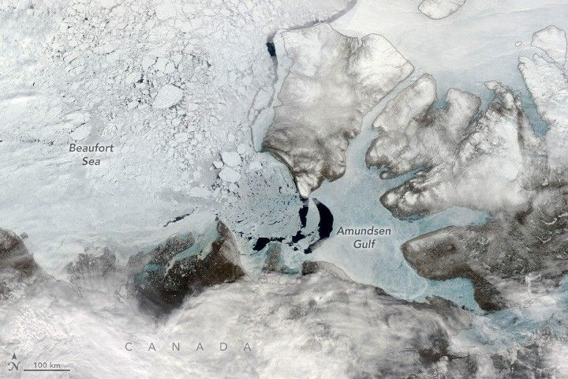

Seasonal Breakup in the Amundsen Gulf
In the early 1900s, polar explorer Roald Amundsen led the first successful expedition across the Northwest Passage. The sinuous seaway winds through the Canadian Arctic Archipelago and can dramatically shorten the journey between the Pacific and Atlantic oceans. Amundsen’s ship and crew emerged from the archipelago in August 1905 and entered what became his namesake, the Amundsen Gulf.
Even now, navigating the passage and gulf presents challenges. For example, sea ice still choked much of the gulf’s waters on June 9, 2025, when the MODIS (Moderate Resolution Imaging Spectroradiometer) on NASA’s Terra satellite acquired this image.
In this scene, some stationary sea ice remained “fastened” to the coastlines. Several chunks had broken free and were drifting west into the Beaufort Sea, continuing a process of breakup that had been ongoing for several months. Winds play an important role in the breakup, and warm summer temperatures will ultimately melt any fast ice that remains.
Across the wider Arctic Ocean, sea ice began its annual cycle of melting and breakup in late March 2025. But the timing and speed of the ice’s retreat can vary by region. Researchers have shown that freeze-up atop the Amundsen Gulf happens quickly during the winter. In contrast, the breakup in spring can take anywhere between two and 22 weeks.
Sea ice in the gulf is usually gone by August, which would have been a boon for Amundsen in 1905. However, ice-choked waters ultimately delayed their advance toward the Bering Strait in September of that year, and the crew spent the winter on the Yukon coast before continuing to Nome, Alaska, the following August.